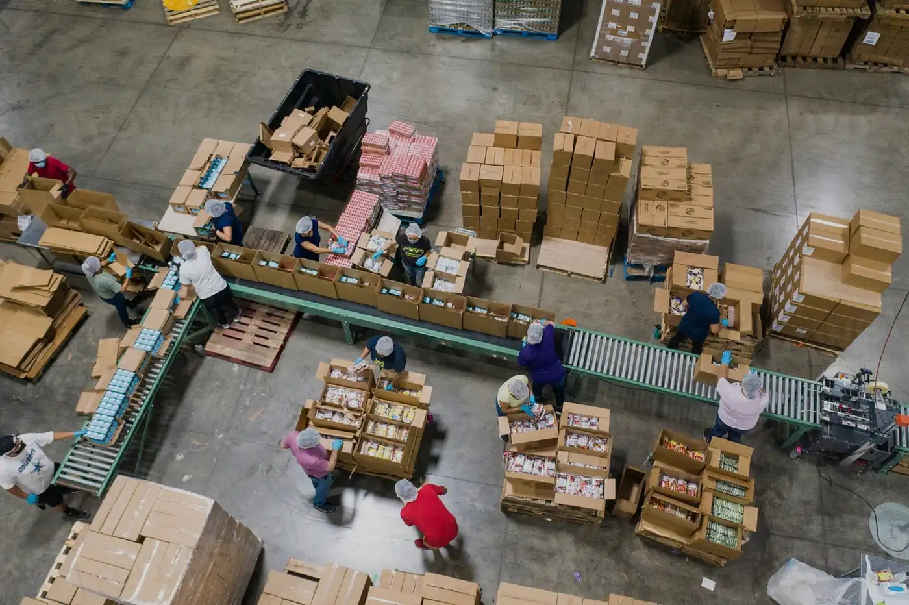

01
売り越しと、そのお詫び
最後の1点が2つの売り場で同時に売れる。謝罪とキャンセル処理が発生し、 売り場の評価点まで下がります。取り戻すのに数か月かかります。

Problem
売り場を増やすほど売上は伸びますが、同じだけ在庫のズレも増えます。 多くの現場が、この3つを人手で吸収しています。
01
最後の1点が2つの売り場で同時に売れる。謝罪とキャンセル処理が発生し、 売り場の評価点まで下がります。取り戻すのに数か月かかります。
02
CSVを落として、突き合わせて、また上げ直す。1日2回で足りず、 セール期間は張り付きになる。担当者が休めない構造になります。
03
ズレを恐れて安全在庫を厚く取ると、実際には在庫があるのに 売り場では品切れ表示になります。機会損失は数字に出てきません。
How it works
各売り場に在庫を持たせるのをやめ、ツナギメが持つひとつの数だけを正とします。 売り場は「表示するだけ」になり、ズレる余地がなくなります。
各売り場の注文・キャンセル・返品を、発生した順にそのまま受け取ります。
同時に届いた更新も1件ずつ直列に処理します。ここが二重引き当てを防ぐ要です。
正となる在庫数はツナギメだけが持ちます。売り場側の数は結果の写しです。
更新後の数を、接続中のすべての売り場へ数秒のうちに書き戻します。
Channels
区分ごとに接続方式を用意しています。個別の事業者名については、お問い合わせ時にご案内します。
総合モール
API接続。在庫・受注・返品に対応
フリマ・C2C
API接続。取り下げ・再出品に対応
自社EC（カート）
主要カート向けの接続設定を同梱
越境EC
通貨・時差をまたいだ在庫の按分に対応
実店舗POS
店頭在庫をオンラインと同じ数として扱う
卸・BtoB
取引先ごとの引当枠を分けて管理
Features
売り場ごとに配分比率や上限を設定できます。売れ筋のチャネルに厚く寄せる運用も可能です。
売り場の数とツナギメの数が食い違ったら、原因の候補とともに通知します。放置されません。
誰がいつどの数をどう変えたかを全件残します。売り越しが起きた際に原因まで辿れます。
独自の売り場や基幹システムも同じ扱いで接続できます。在庫が動いた瞬間に通知します。
{
"event": "stock.changed",
"sku": "TG-1042-BLK-M",
"before": 3,
"after": 2,
"cause": "order", // order / cancel / return / manual
"channel": "marketplace",
"at": "2026-08-25T11:04:12+09:00"
}Onboarding
最短3営業日。既存の売り場を止めずに切り替えます。
01
管理画面から各売り場の認証情報を登録します。コードを書く必要はありません。
02
売り場ごとにバラバラの商品コードを、SKU単位で対応づけます。候補は自動で提示されます。
03
最初の数日は書き込みを止めたまま動かします。現状とのズレを可視化してから本番に入ります。
04
書き込みを有効にすると、その時点から在庫はひとつの数になります。切り戻しも1操作です。